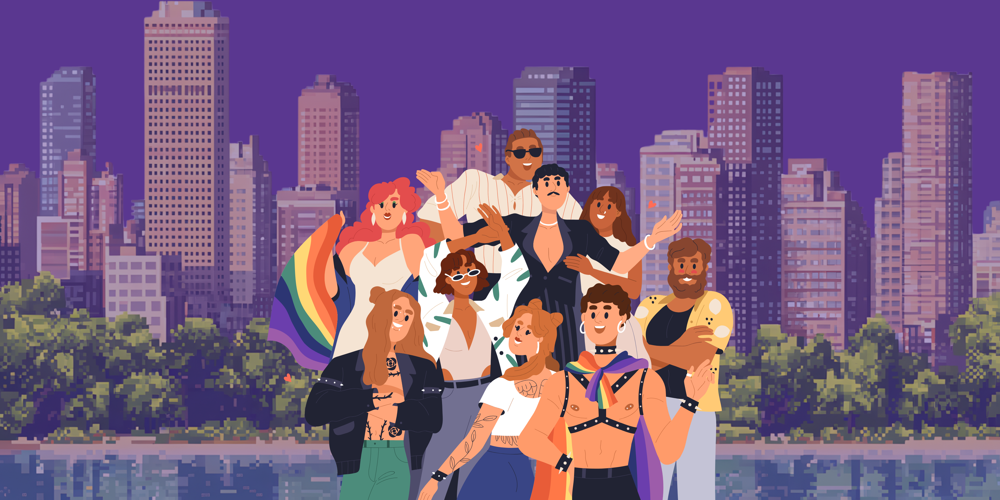
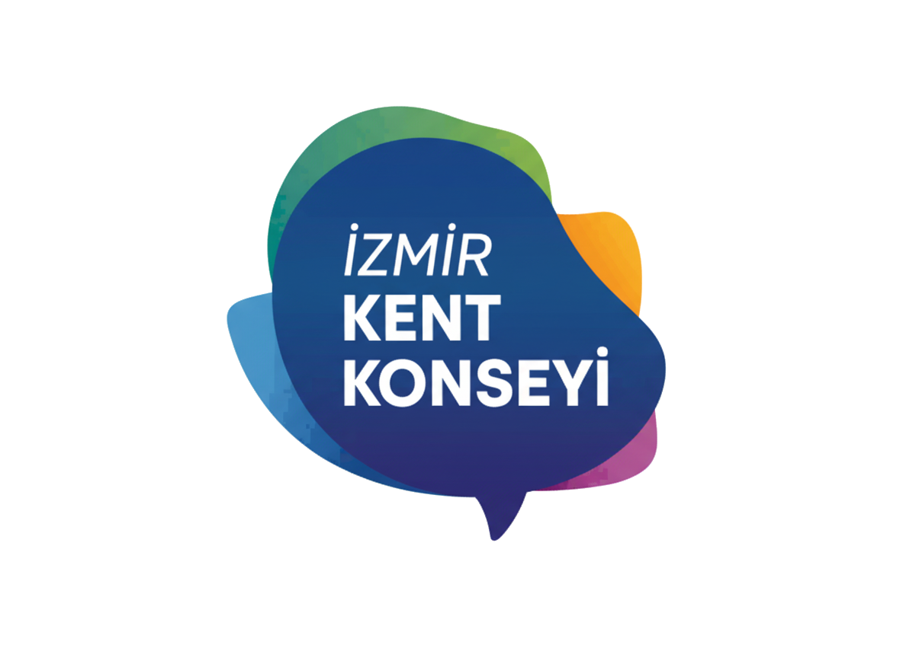
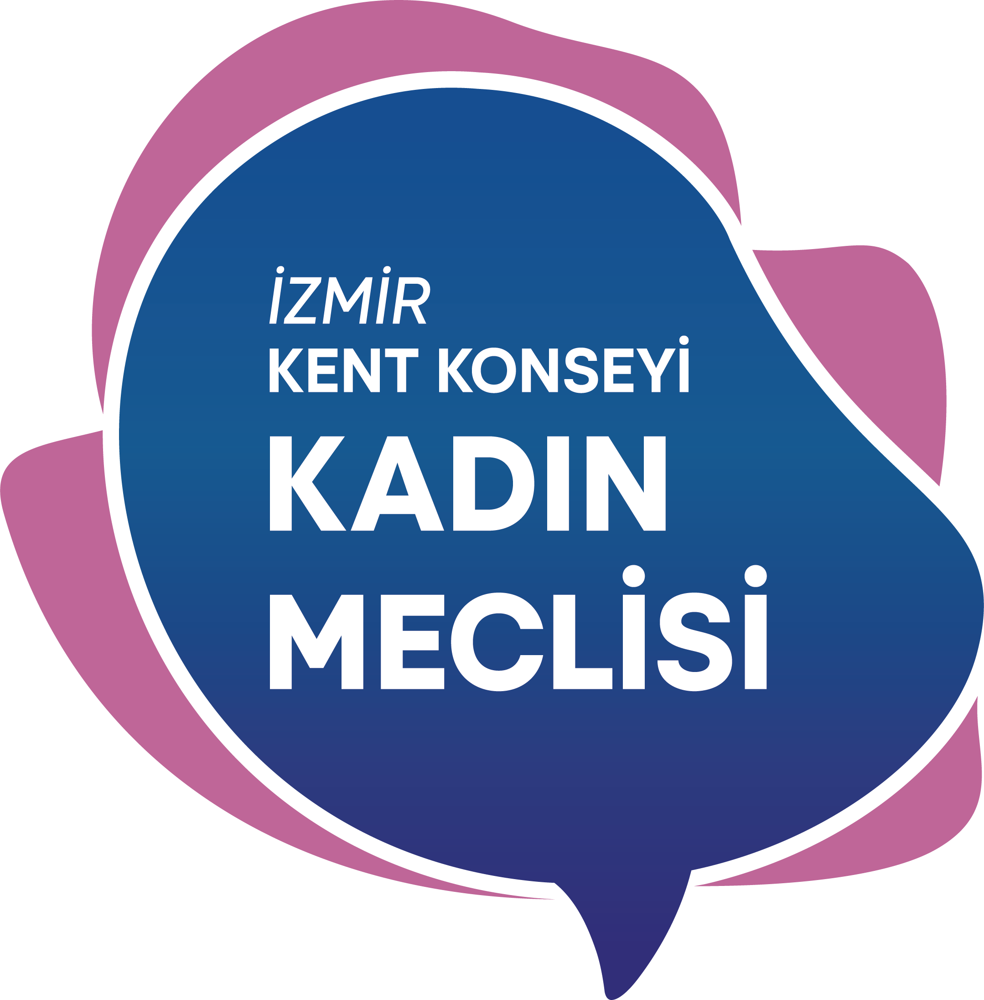

Bu platform, İzmir’de kadınların ve LGBTİ+ bireylerin kamusal alanda yaşadığı güvensizlik deneyimlerini görünür kılmak için oluşturuldu.
Yaşananlar tekil değil; mekânsal, tekrar eden ve paylaşıldıkça anlam kazanan deneyimler.
Bu harita, kentte güvensizlik hissedilen ya da görece daha güvenli bulunan alanların bireysel deneyimler üzerinden işaretlenmesini sağlar.
Burada paylaşılan her işaret, “yalnız değilim” duygusunu güçlendiren kolektif bir anlatının parçasıdır. Haritalama sayesinde, güvensizlik hissinin kişisel bir sorun değil, mekânsal ve yapısal bir mesele olduğu görünür hâle gelir.
Bu çalışma, İzmir Kent Konseyi ile kurulan iş birliği sayesinde yalnızca görünürlük üretmeyi değil, aynı zamanda yerel yönetimler üzerinde dönüşüm talebi oluşturmayı hedefler. Toplanan veriler; kamusal alan tasarımı, aydınlatma, ulaşım ve güvenlik politikaları üzerine somut aksiyonların tartışılmasına zemin hazırlar.
Gündelik hayatta yaptığın şeyi burada da yapıyorsun: Bazı sokaklardan kaçınmak, bazı alanlarda tetikte olmak, rotanı değiştirmek.
Bu platformda, yaşadığın deneyimi işaretleyerek onu görünür kılıyor ve başkalarının da benzer hisleri yaşadığını görüyorsun.
Kategori seçin ve haritaya dokunun.
Haritalama süreci yalnızca bu web sitesiyle sınırlı değil. Odak grup atölyelerinde, bir araya gelerek kentte yaşanan güvensizlik deneyimlerini birlikte haritalıyoruz, konuşuyoruz ve anlamlandırıyoruz. Atölyelerde yapılan fiziksel haritalama çalışmaları, buradaki dijital haritayla birleşerek daha güçlü bir anlatı oluşturuyor.
Yeni medya teknolojilerini kullanarak, fiziksel dünyada yaşanan bir problemi birlikte görünür kılıyoruz.
Bu süreç bir veri toplama değil, bir empowerment sürecidir. Tedirginlik, güvensizlik ve umutsuzluk duygularını paylaşan bireyleri bir araya getirerek, bu deneyimleri politik ve kolektif bir zemine taşımayı amaçlar. Burada işaretlediğin noktalar bir son değil.
Gel, bunu hep beraber konuşalım.
Kenti birlikte yeniden düşünelim.
Kentin Görünmez Sınırları, kentte güvende hissetmeyen insanların deneyimlerinden yola çıkarak ortaya çıkan bir projedir. Bu deneyimler çoğu zaman bireysel bir korku gibi algılansa da, aslında kamusal alanın nasıl tasarlandığıyla doğrudan ilişkilidir. Kent, herkes için aynı şekilde deneyimlenmez.
Biz güvende hissetmeyen, tetikte yürüyen, bazı sokaklardan kaçınan insanlarız. Ben de bu insanlardan biriyim. Bir kadın olarak, kentin bazı bölgelerinde var olmanın sürekli bir dikkat hâli gerektirdiğini biliyorum. Bu proje, tam da bu hissin normalleştirilmesine karşı çıkmak için var.
İzmir Kent Konseyi ile yürütülen bu çalışma, bireysel deneyimlerin kurumsal bir muhatapla buluşmasını amaçlar. Haritalama sonucunda ortaya çıkan verilerin, yerel yönetimlerin kamusal alan politikalarını yeniden düşünmesine katkı sunması hedeflenmektedir. Amaç, yalnızca anlatmak değil; değişim talep edebilecek bir zemin oluşturmak.


Bu harita tamamlanmış değil. Çünkü kent, onu yaşayanlar sustukça değil, konuştukça değişir.